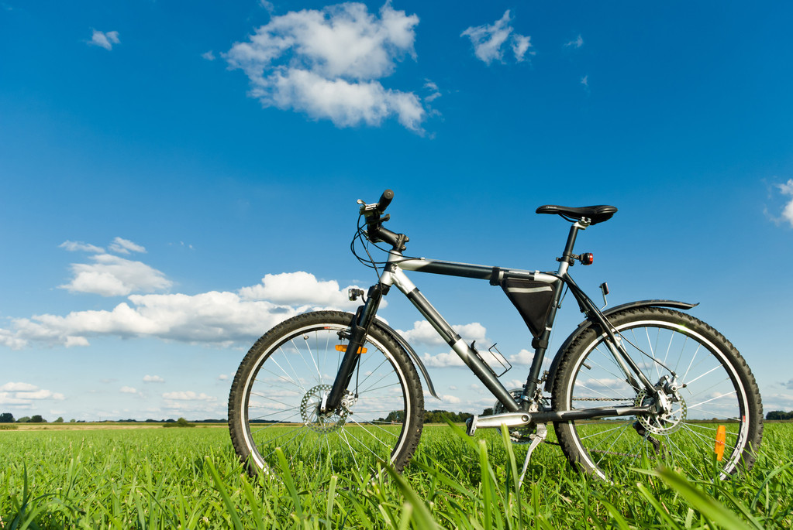

Веложиття
Пропонуємо поринути у вир велосипедних пригод разом з журналом "Веломастер"
- Велосипеди на будь який смак
- Цікаві історії велосипедистів
- Велоспорт та здоровя велосипедиста
- Технічний огляд новинок та поради спеціалістів
Велосипед це не просто транспортний засіб це цілий світ повязаних між собою людей з одними прагненнями та цілями бути здоровими, сильними, витривалими.
Підписка на щомісячну розсилку журналу